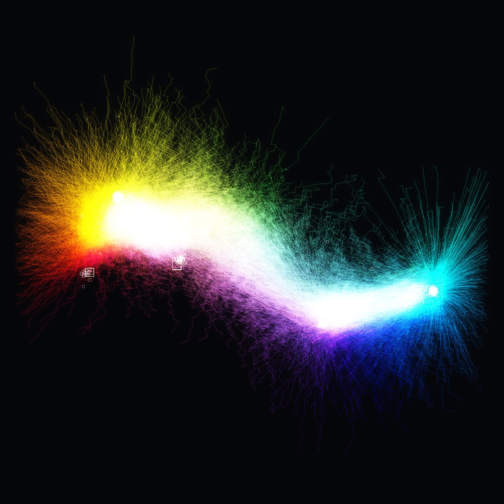

The feed
Click anywhere on the map to put yourself in the crowd, where your taste is.
This is a kept world: No. 13, after twenty years. With scripts on, the page runs a new world and plays its months.
Year 20
- A shopper’s path, in the color of where their taste started
- White: people from many places in one place
- A thing for sale: bigger the more it is favorited, brighter the more people were shown it this month
- You, and you if you had only searched
What this is
Six thousand shoppers who never existed, on a map of taste. Two numbers stand for what each of them likes, and the things for sale sit on the same map. Every month a feed shows each shopper six things. They favorite at most one, and their taste moves a little toward it. The feed learns from that favorite and shows them more like it, and more of what everyone else has been favoriting.
Twenty years of that are drawn as one long exposure. Every shopper leaves a faint line in the color of where their taste started. A crowd that keeps to itself keeps its color. Where people from all over the map end up in one place, their colors add up toward white.
The squares are the things for sale, bigger the more they have been favorited lately and brighter the more people were shown them that month. The sellers move too. Each month a thing drifts toward where favorites have been falling, and a thing that nobody favorites for a year is taken down and replaced, often by a copy of something that sells.
The rule
Each month the feed scores things for each shopper. A thing scores higher the nearer it is to what the feed has learned about that shopper: the place of their recent favorites, trusted more once there are a few. It scores higher still the more it has been favorited lately by everyone, and a little chance is added. The six best are shown. Some of the six places go to anything at all in the catalog: between one in fifty and one in seven at first, depending on the world.
A shopper likes a thing more the nearer it is to their own taste, which the feed does not see. They favorite the one they like best, with a chance that grows with how much they like it. Their taste moves 2 to 5 percent of the way toward it, depending on the world, and every month it is pulled back a little toward where it started.
Beside the feed you can run the same crowd searching instead. Each shopper is then shown the six things nearest their own taste, with no lean toward what is popular. The dashed dot that starts where you do is you, searching.
The number in the address is a world, from 1 to 99,999. It decides how the crowd starts out (in camps, as many small tastes, in a ring, along a line, spread out, or mostly in the middle), how big the catalog is (180 to 900 things), how picky and how easily moved the people are, how quick the sellers are, and how the feed is set at first. The same number always gives the same world. A change you make starts from the month on the rail and throws away the months after it.
Where it comes from
Ray Jiang and others, “Degenerate Feedback Loops in Recommender Systems” (2019), model one person whose interest in a thing moves each time they are shown it, and show how the loop can narrow that person’s interests to a few things. This page lets tastes move in the same way, for a crowd.
Others get a narrowing without tastes moving at all. Allison Chaney, Brandon Stewart and Barbara Engelhardt, “How algorithmic confounding in recommendation systems increases homogeneity and decreases utility” (2018), simulate feeds trained on what their own recommendations led people to do, and find people’s behavior growing more alike without growing more useful to them. Daniel Fleder and Kartik Hosanagar, “Blockbuster Culture’s Next Rise or Fall” (2009), find that feeds which cannot recommend what has little sales history can lower sales diversity overall. Masoud Mansoury and others, “Feedback Loop and Bias Amplification in Recommender Systems” (2020), find the lean toward what is already popular growing stronger with each turn of the loop.
What it leaves out
Taste has more than two numbers to it, and a real feed learns far more than a place on a map. Here nobody joins or leaves, and nobody buys anything, sees an ad, or follows a season or a friend. The sizes of things are this page’s choices, not measurements: how far a favorite moves a taste, how set people are, how fast sellers follow, and how much the feed leans on the popular. What the page can say is how often the shape holds. In 40 worlds run while it was made, the feed gave half of its showings to less than a quarter as much of the catalog as searching did in every one, and the crowd with the feed ended up on less ground than the same crowd searching in 38. In the other two it ended up on a little more.
One world, kept
For readers without scripts the page keeps one world as the picture above and as this table.
| Year | Ground, with the feed | Half, with the feed | Ground, searching | Half, searching |
|---|---|---|---|---|
| 0 | 100% | – | 100% | – |
| 2 | 57% | 1% | 88% | 33% |
| 4 | 40% | 1% | 67% | 25% |
| 6 | 32% | 1% | 47% | 22% |
| 8 | 29% | 1% | 40% | 22% |
| 10 | 26% | 1% | 36% | 21% |
| 12 | 24% | 1% | 34% | 21% |
| 14 | 22% | 1% | 32% | 21% |
| 16 | 21% | 1% | 31% | 22% |
| 18 | 20% | 1% | 31% | 22% |
| 20 | 20% | 1% | 30% | 20% |
No. 023. Set in Instrument Sans and Instrument Serif. Home